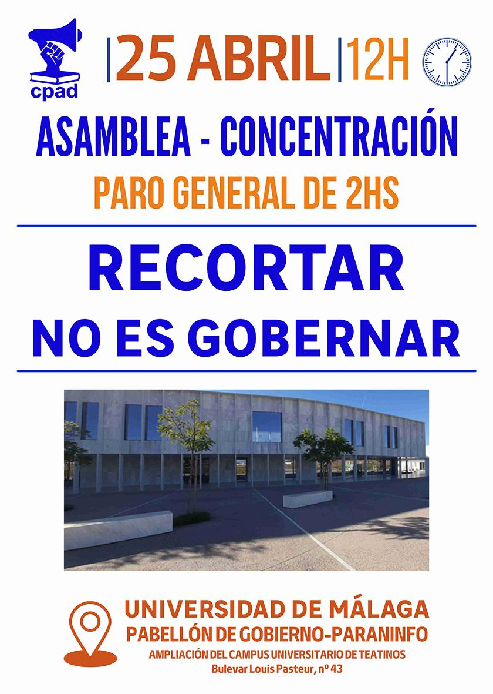

Notas de prensa


Contacto
Si quieres unirte o contactar con el colectivo, escríbenos a colectivopaduma@gmail.com .
Somos el Colectivo de Profesorado Ayudante Doctor (CPAD) de la Universidad de Málaga y queremos compartir nuestra preocupación e indignación por la situación de infrafinanciación actual de nuestra universidad.
¿Por qué nos movilizamos?La UMA, la única universidad pública de Málaga, alberga el 15% del alumnado universitario de Andalucía. Desde 2012 lleva sufriendo de manera continuada una pérdida de fondos públicos liderada por la Conserjería de Universidades de la Junta de Andalucía y avalada por nuestro rectorado.
¿Qué implica esta situación de infrafinanciación?Que la UMA haya dejado de recibir aproximadamente 18 millones de euros anuales en los últimos 12 años, lo que ha contribuido en gran medida a la deuda actual de 20 millones de euros.
Que la calidad de la docencia se está viendo afectada por la falta de disponibilidad de materiales de laboratorio, envejecimiento en el estado del equipamiento informático y de aulas/pabellón, limitaciones en el número de fotocopias incluyendo exámenes, salidas y excursiones académicas, y dificultades para el desarrollo de TFG y TFM experimentales, entre otros.
Que se está retrocediendo en derechos laborales ya alcanzados y que se está poniendo en peligro la estabilización del personal docente e investigador: sobrecarga de horas docentes, limitaciones en la RAD, bloqueo de nuevas contrataciones, paralización de promociones del profesorado acreditado, posibles recortes en la plantilla (especialmente en sectores vulnerables como PSI o profesorado asociado), entre otros.
Que se haya reducido personal en servicios básicos (p.ej., limpieza) y de formación (p.ej., FGUMA), que se hayan aplicado recortes en ayudas sociales, retrasos y/o suspensión de convocatorias de apoyo a la investigación, etc.
¿Y qué podemos hacer?Desde el CPAD manifestamos nuestro firme compromiso en la protección de la UMA como servicio público.
Ante esta situación en la que se están vulnerando los derechos laborales y la calidad de nuestra universidad: Animamos a todos los colectivos de la UMA —alumnado, PTGAS, PDI y Personal Investigador — a sumar esfuerzos y trabajar conjuntamente en la defensa de nuestra universidad y nuestros derechos laborales.
Sólo de esta manera conseguiremos lo que todas y todos queremos, que la Universidad de Málaga continúe ofreciendo un servicio público y de calidad a nuestra sociedad.
Próxima concentración: viernes 25 de abril en el Pabellón de Gobierno 👇🏻
Si quieres unirte o contactar con el colectivo, escríbenos a colectivopaduma@gmail.com .